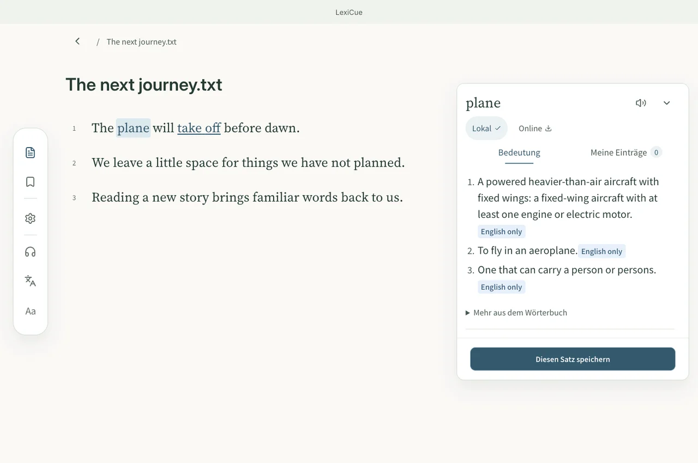
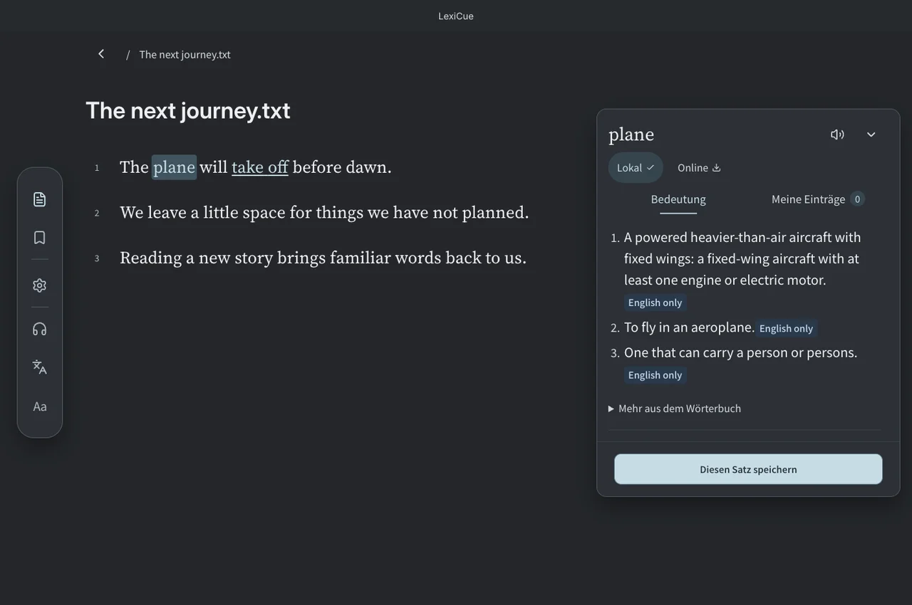

Lesen und Nachschlagen
Verstehe Englisch, ohne deine Lesestelle zu verlieren.
Auf dieser Seite
Wörter und Passagen
- Wähle ein Wort für die Wörterbuchsuche oder eine Passage zum Verstehen im Kontext. Wechsle verfügbare Wörterbuchquellen und ergänze bei Bedarf deine eigene Erklärung.
- Auf dem Desktop öffnet sich die Suche neben dem Text, auf kleinen Bildschirmen von unten. Schließe sie zum Weiterlesen.



Siehe auchWörterbuchbedeutungen
Chinesische Übersetzung und Hörmodus
Blende chinesischen Text mit der Übersetzungssteuerung ein oder aus. Vorhandene Übersetzungen bleiben erhalten; fehlende lassen sich online abrufen. Bei Fehlern kannst du Englisch weiterlesen und später erneut versuchen.
Starte den Hörmodus, verwende verfügbares Quellaudio oder Sprachausgabe und passe das Tempo an. Netzwerk, verfügbare Medien und Plattform bestimmen die Möglichkeiten.
Verständnis speichern
Speichere Ausdruck, Originalsatz und verfügbare Wörterbuchreferenz mit eigener Erklärung oder Notiz für den Satz. Der aktuelle Arbeitsplatz setzt auf Kontexte und Wiederbegegnungen; frühere Lernaufzeichnungen bleiben im Verlauf.